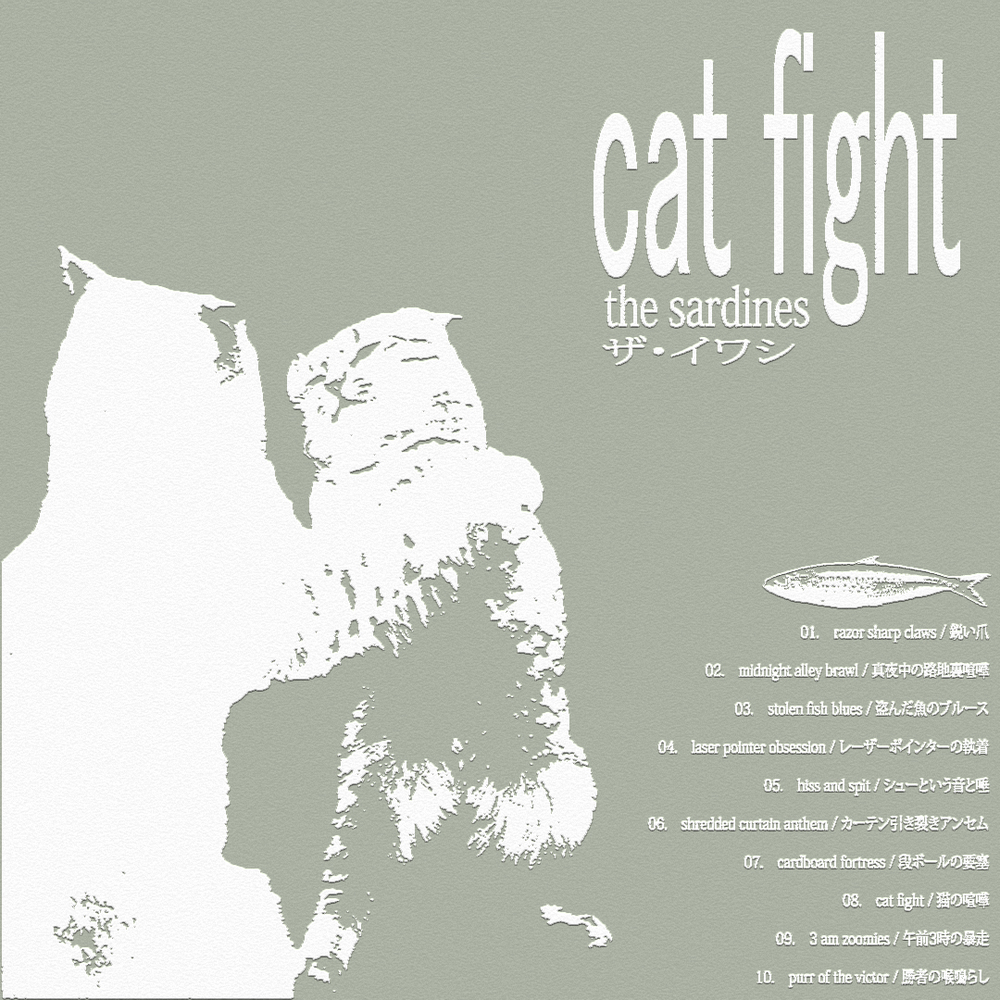
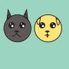

Final Project
This is my final project, it can be a poster, icon graphic, gif, animation, or webpage.
Here lies all the amazing work I did this semester, Spring 2026.
I am interested in websites, coding, music, software development. When I am older and wiser, I want to farm and touch grass. But for now, I am here because of the strange inventions that people before me made. Maybe someday this will be different, but today, I am writing code. I hope you are well.

I made this poster as my first assignment in New Media, we learned about text and digital graphics, using Illustrator. I chose to represent an imagined album cover because I love cats and rock & roll. I used a degraded photo filter on the expanded type and image of the cats, to give a grungy feeling.

I made these icons to represent different aspects of my daily life. I chose coffee because I drink coffee everyday (black coffee, non specifically branded)...
This is my animation assignment (#3), the focus of this assignment was on motion, feedback, and revisions. In the second version, I looked more closely at the motion and tried to ...
This is my website (HTML, CSS, vanilla JS) about one of my favorite record labels, spectral sound. You can visit it here
.This is my final project, it can be a poster, icon graphic, gif, animation, or webpage.